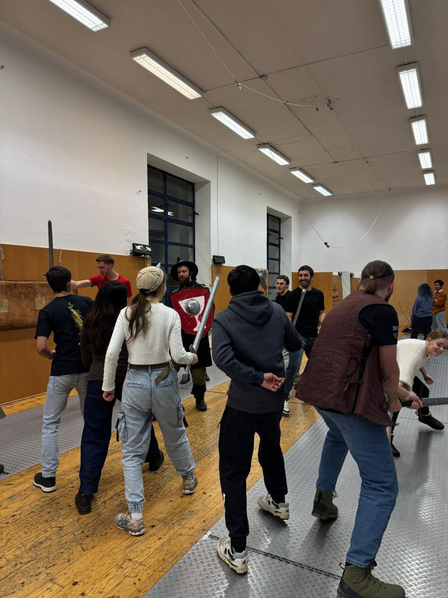

Bezpečnost především · závazná pravidla měkčeného boje
Žádné zásahy do hlavy, krku, rukou, chodidel či třísel. Jen kontrolované údery, nikdy plnou silou. Každý si přiznává zásah sám; hraniční a nejasné zásahy neplatí. Na STOP okamžitě přerušte akci.
Přečíst úplná pravidla bezpečného boje → · Veřejný přehled klubového arzenálu zdarma →
Safety first · mandatory club soft-combat rules
No strikes to head, neck, hands, feet or groin. Controlled blows only, never full force. You call your own received hits; borderline or unclear strikes do not count. Stop immediately on STOP.
Read full safety and scoring rules → · Browse free club arsenal categories →
Безопасность прежде всего · правила мягкого боя
Не бить в голову, шею, кисти, стопы и пах. Только контролируемые удары, не в полную силу. Полученные удары каждый оценивает сам; все пограничные случаи не считаются. На STOP бой немедленно прекращается.
Полные правила безопасности и зачёта ударов → · Категории бесплатного клубного арсенала →
Безпека передусім · правила м’якого бою
Не бити в голову, шию, кисті, стопи чи пах. Лише контрольовані удари, ніколи на повну силу. Кожен сам визнає отримані влучання; сумнівні контакти не зараховують. На STOP негайно зупиняємося.
Повні правила безпеки та підрахунку → · Безкоштовний клубний арсенал — категорії →
Od 1. listopadu — nový výcvik a klubový arzenál zdarma
Pravidla platí pro všechny na pravidelném tréninku, nejen pro nováčky. Pondělí a sobota od 18:00, plánovaná délka 120 minut; skutečný termín, místo a bezpečnost musí být písemně potvrzeny.
- 12 průběžně se opakujících témat Pěšák pro všechny úrovně ve společném tréninku. Každý má individuální úkoly a uznané dovednosti se nenulují ani při vynechání termínu. Dřívější hodnosti, docházka a předplacená práva zůstávají. Dobrovolný buddy pilot je oddělený.
- Arzenál zdarma: vhodné zkontrolované měkčené jednoruční meče a štíty na schváleném tréninku i při individuálně dohodnutém výjezdu LARP. Žádné placené sady, příplatky ani peněžní kauce. Ostatní výbava jen podle skutečné dostupnosti, bezpečnosti, souhlasu k zapůjčení a pravidel konkrétní akce.
- 2–4 herní HP podle celkové kvality, sourodosti a pokrytí celého kostýmu; helma a prošívanice jsou jen příklady, nikoli povinné položky. Zásahy do hlavy zakázány, na cizích LARP platí jejich pravidla.
- Až kolem 100 osob je plánovaný organizační rozsah — nikoli garantovaná bezpečná místa pro každou událost.
7. 11. trénink ZRUŠEN. Workshop v Orlovně Husovice 14. 11., 12:00–14:30 pořadatel potvrdil jako bezplatnou akci; povinné přihlášení přímo pořadateli a jeho osobní potvrzení každého místa je však podmínkou účasti. Nové placené rezervace HEMA zůstávají pozastaveny do právních, pojistných, personálních a technických ověření. Neplaťte ani necestujte bez potvrzení.
From 1 November — new training and free club arsenal
For everyone on regular club sessions, not just newcomers. Monday and Saturday, normally 18:00, with a planned 120-minute format; each date, venue and safety clearance requires written confirmation.
- 12 recurring Pěšák training themes shared by all skill levels, with personal goals and observed skill checks. Missing a date does not reset learned or recognised skills. Existing ranks, attendance and prepaid rights remain. The optional buddy pilot is separate.
- Free club arsenal: suitable inspected padded one-handed swords and shields in approved sessions or individually approved off-site LARP outings. No paid rental sets, item charges or cash deposit. Other items depend on availability, safe fit, individual borrowing approval and event rules.
- 2–4 scenario HP from the whole costume's overall quality, coherence and coverage, not a compulsory item checklist. Helmet and gambeson are examples only. No head strikes; external LARP uses its own rules.
- Up to around 100 participants is the club's planning scale, not a verified safe or bookable capacity on every date.
7 November training CANCELLED. The separate free HEMA workshop at Orel Husovice on 14 November, 12:00–14:30 is confirmed by its organiser; direct advance registration and the organiser's personal confirmation for each attendee are mandatory. New paid HEMA bookings remain paused pending legal, staffing, venue, insurance and technical checks. Do not pay or travel without written confirmation.
С 1 ноября — новая программа и бесплатный арсенал клуба
Для всех регулярных тренировок, не только для новичков. Понедельник и суббота с 18:00, плановая длительность 120 минут; конкретную дату, площадку и безопасность организатор подтверждает письменно.
- 12 повторяющихся общих тем Pěšák для участников любого уровня. Каждый выполняет свои задания и сдаёт навыки по факту; пропуски не обнуляют освоенное или признанный опыт. Прежние звания, посещения и оплаченные права сохраняются. Добровольная buddy-программа отдельно.
- Арсенал бесплатно: исправные проверенные мягкие одноручные мечи и щиты на подтверждённых тренировках и индивидуально согласованных выездах LARP. Нет платных комплектов, доплат или денежных залогов. Другое снаряжение — по наличию, исправности, индивидуальному согласованию выдачи и правилам мероприятия.
- 2–4 игровых HP по общей оценке всего костюма, а не по подсчёту предметов. Шлем и гамбезон — только примеры. Удары в голову запрещены; внешние LARP устанавливают собственные правила.
- Масштаб — примерно до 100 участников, однако реальные безопасные места подтверждаются отдельно на каждой площадке.
7 ноября тренировка ОТМЕНЕНА. Бесплатный мастер-класс в Orel Husovice 14 ноября, 12:00–14:30 подтверждён организатором; обязательна предварительная запись напрямую к организатору и его личное подтверждение места. Новая платная запись HEMA пока закрыта до правовой, кадровой, страховой и технической проверки. Не платите и не приезжайте без подтверждения.
З 1 листопада — новий курс та безкоштовний клубний арсенал
Для всіх регулярних занять, а не лише новачків. Понеділок і субота з 18:00, планова тривалість 120 хвилин; точну дату, місце й безпеку організатор підтверджує письмово.
- 12 повторюваних спільних тем Pěšák для учасників усіх рівнів. Кожен виконує власні завдання; пропуски не обнуляють уже засвоєні чи визнані навички. Попередні звання, відвідування та оплачені права зберігаються. Добровільна buddy-програма окремо.
- Арсенал безкоштовно: справні перевірені м'які одноручні мечі та щити на підтверджених заняттях і погоджених виїздах LARP. Без платних наборів, доплат чи застави. Інше спорядження — за наявності, безпечною придатністю, погодженням видачі й правилами заходу.
- 2–4 ігрових HP за цілісністю та якістю всього костюма, а не кількістю частин обладунку. Шолом і гамбезон — лише приклади. Удари в голову заборонені.
- Планований масштаб — приблизно до 100 людей, але фактична безпечна місткість підтверджується для кожного заходу.
Тренування 7 листопада СКАСОВАНО. Безкоштовний майстер-клас Orel Husovice 14 листопада, 12:00–14:30 підтверджений організатором; потрібна попередня реєстрація безпосередньо в організатора та його особисте підтвердження місця. Нове платне бронювання HEMA призупинене до всіх перевірок. Не сплачуйте й не приїжджайте без підтвердження.
Brno · HEMA · LARP
Your first battle or the next one?
Safe historical fencing and archery in Brno — beginners welcome.
Club participation does not require legal association membership. Friendships grow through repeated meetings.
New paid HEMA bookings are paused. Enquiries only; do not pay or travel without written confirmation.
First visit, timetable, equipment & safety
Your first step
Curious about fencing? You belong here.
No experience or equipment needed to ask. Every visit requires individual confirmation.

Usual daysMonday · Saturday
Usual time18:00 · duration confirmed per date
Meeting pointNová Zbrojovka · Brno (outdoors)
How your first visit works
Tell us you are interested
Ask about a future date. No commitment or payment.
We confirm the details
Wait for written confirmation of time, place and safety conditions.
Learn at your own pace
Start with STOP, safety and controlled movements. No forced sparring.
Not sure which weapon or training suits you?
Ask a question on WhatsApp ↗
Just tell us you are new. Paid reservations are currently paused.
HEMA · Safety & booking / Bezpečnost a přihlášení
New paid HEMA bookings are paused. Legal supplier qualification, payment beneficiary and live booking tests are not yet cleared. The old form is retired. Ask about a date first: a message is not a reservation or request for payment. Do not pay or travel without written confirmation of the organiser, place, time, current terms and safety conditions. Existing confirmed contractual rights remain valid.
Nové placené rezervace HEMA jsou pozastaveny. Odborné oprávnění poskytovatele, příjemce plateb a ostré rezervační testy zatím nejsou doložené. Starý formulář nepoužívejte. Nejprve se nezávazně zeptejte na termín; zpráva není rezervace ani výzva k platbě. Bez písemného potvrzení pořadatele, místa, času, podmínek a bezpečnosti neplaťte ani necestujte. Dřívější potvrzené smluvní závazky zůstávají platné.
Новые платные бронирования HEMA приостановлены. Квалификация и разрешение поставщика услуги, получатель платежа и полные тесты записи пока не подтверждены. Старая форма не используется. Сначала уточните дату: сообщение не является записью или требованием оплаты. Не платите и не приезжайте без письменного подтверждения организатора, места, времени, условий и безопасности. Ранее подтверждённые договорные права сохраняются.
Нові платні бронювання HEMA призупинено. Кваліфікацію й дозвіл постачальника, отримувача платежу та повні тести запису ще не підтверджено. Стару форму не використовуйте. Спершу запитайте дату: повідомлення не є бронюванням чи вимогою оплати. Не сплачуйте й не приїжджайте без письмового підтвердження організатора, місця, часу, умов і безпеки. Раніше підтверджені договірні права зберігаються.
CZ · EN · UA · RU — HEMA safety / Bezpečnost / Безопасность →
Typical training times · confirm first
When and where we usually train#
Training is normally planned two evenings a week. Every session depends on the instructor, venue and safety conditions.
Schedule update — 22 October 2026: Thursday 18:00 training is permanently discontinued.
Monday18:00 · duration confirmed per date
Saturday18:00 · duration confirmed per date
Usual meeting pointNová Zbrojovka, Brno
Get directions ↗Regular sessions are planned outdoors in the Nová Zbrojovka area. There is no permanent hall; ask for written confirmation of the actual meeting point, permitted space and event before travelling.
These are usual days, not confirmed events or reservations. Do not travel or pay without written confirmation of the date, place, organiser and terms. LARP outings are announced separately.
Your first visit
What to bring and expect#
Start with an introduction and safety briefing, not a compulsory duel.
Wear
Comfortable sportswear and stable, closed shoes.
Bring
Water and your questions. Ask whether suitable club equipment is available for the specific session.
Practice
STOP and safety → distance and footwork → controlled sword-and-shield movements → optional drills.
Safety
The instructor checks equipment. You can refuse sparring. Minors require guardian consent and event-specific approval.
Good to know
Questions before your first visit
Clear answers, without pretending an inquiry is a booking.
I have never fenced. Can I come?
Ask the organisers for the current details before attending.
Do I need my own equipment?
Ask the organisers for the current details before attending.
Can I simply turn up?
Ask the organisers for the current details before attending.
Can I pay online now?
Ask the organisers for the current details before attending.
Can I try archery?
Ask the organisers for the current details before attending.
Can I say no to sparring?
Ask the organisers for the current details before attending.
How are levels earned?
Ask the organisers for the current details before attending.
Can young people participate?
Ask the organisers for the current details before attending.
Training paths, ranks & club rules
Ranks · updated 24 Oct 2026
Three qualifications. One fellowship.#
The club now has seven combat B ranks, seven command C qualifications and seven craft K qualifications. Operational duties are separate from earned ranks. Achievements A-01—A-10 celebrate verified contributions.
See the complete rank system · six languages →
Combat bands: B-I none, B-II red, B-III blue, B-IV orange, B-V black/gold; B-VI/VII honor insignia await a safe optional design. A thin removable green ribbon indicates current Senior participation; it is not a rank. Previously earned levels are respected. Any instructor permission needs separate authorization.
B-I—B-VII · C-I—C-VII · K-I—K-VII · A-01—A-10
1 November 2026: Member pilot opens on 1 November 2026: voluntary review of verified progress, mentoring and achievements. Approved ranks remain; existing fees and safety restrictions are unchanged. Personal online accounts are not live yet. Pilot →
More ways to contribute
You belong here beyond the battlefield#
Helping the club is voluntary. You do not need a rank or a volunteer duty to enquire about a first session.
Welcome friends
Help newcomers understand the club and its safety-first approach.
Join events
Take part in suitable LARP outings after the organiser confirms eligibility and rules.
Support beginners
Help with supervised introductions and mentoring within your competence.
Craft & care
Help maintain or repair equipment subject to the safety checks.
Help organise
Assist with transport, setup or an agreed event task.
Real volunteer contributions may be recognised with evidence and consent. They never automatically replace combat training or grant a qualification.
Rules and code
Conduct & Safety#
Conduct
- No extremism — immediate removal.
- Respect for members, gear, and the venue.
- Honor code — honestly acknowledge hits taken in sparring.
- Conflicts are resolved through the head trainer, not in public.
- Alcohol and drugs are strictly forbidden.
Safety
- The right to refuse a bout — no explanation needed.
- Gear check is mandatory before use.
- Newcomers get a briefing before their first bout.
- Minors may attend only with guardian consent and confirmation of a suitable event, instructor and safety arrangements.
Discipline
| Violation | Consequence |
|---|---|
| 1st violation | A strike (written warning) |
| 2nd violation | Removal (can rejoin after 3 months) |
| Repeated | Final removal |
| Severe | Immediate removal |
Community, media, team-building & contacts
External coverage
Družina Moravy in the media#
Press reports and public references to our community, with editorial coverage distinguished from event directories.
Šachový souboj v reálném světě. Nadšenec z Brna přibližuje historický šerm ↗
Brněnský deník covered our historical fencing workshops and their role in helping international students find movement and new friendships in Brno.
Also listed on
These are public event or group listings, not independent press reviews.
- Go To Brno ↗Brno's official visitor and event portal
- Šermíři.cz ↗Historical fencing club catalogue
- LARP.cz ↗LARP community group profile
- Brno Expat Fair 2026 ↗Exhibitor directory, Brnowalkers & Družina Moravy
Event details or tariffs in older external listings may be outdated. Please check current information on this website before booking.
PRO FIRMY A SOUKROMÉ SKUPINY · BRNO
Obránci hradu — teambuilding, který vás spojí
90 minut příběhového týmového zážitku s instruktorem vedeným historickým šermem pro 8–20 dospělých. Jednoduché role, signály, měkčené tréninkové meče a společná „obrana brány“; bez tvrdého sparringu a bez nutnosti předchozích zkušeností.
Orientačně 7 900 Kč za celou skupinu do 20 lidí (při plné skupině 395 Kč na osobu).
Zjistit program a nezávazně poptat termín →Přijímáme pouze nezávazné poptávky; nové placené rezervace zatím neaktivujeme. Před potvrzením ověřujeme zákonné oprávnění poskytovatele, personál, prostor, bezpečnost a pojistné krytí.
FOR COMPANIES & PRIVATE GROUPS · BRNO
Castle Defenders — teamwork with a story
A supervised 90-minute, beginner-friendly historical-fencing experience for 8–20 adults. Roles, signals, padded practice swords and a cooperative castle-gate challenge. No hard-contact sparring.
Indicative CZK 7,900 for the whole group of up to 20 (CZK 395 each at full capacity).
Explore the programme and request a quote →Non-binding enquiries only; new paid bookings are not open. Legal provider eligibility, competent instructors, venue, safety and activity-specific insurance must be checked before commitment.
ДЛЯ КОМПАНИЙ И ЗАКРЫТЫХ ГРУПП · БРНО
Защитники крепости — командная миссия
90 минут сюжетного исторического фехтования для 8–20 взрослых под руководством инструкторов. Роли, сигналы, мягкое тренировочное оружие и совместная защита ворот; жёстких спаррингов нет.
Ориентировочно 7 900 Kč за всю группу до 20 человек (395 Kč на человека при полном составе).
Программа и запрос предложения →Пока принимаем лишь предварительные запросы, не оплачиваемые бронирования. До подтверждения проверяем право организатора, инструкторов, площадку, безопасность и страхование.
ДЛЯ КОМПАНІЙ І ПРИВАТНИХ ГРУП · БРНО
Захисники фортеці — спільна пригода команди
90 хвилин історичного фехтування для 8–20 дорослих під наглядом інструкторів. Ролі, сигнали, м'які тренувальні мечі та спільний захист брами; без жорстких поєдинків.
Орієнтовно 7 900 Kč за всю групу до 20 осіб (395 Kč на особу за повного складу).
Програма та запит пропозиції →Поки що лише попередні запити, без платного бронювання. Перед підтвердженням перевіряємо право постачальника, інструкторів, місце, безпеку та страхування.
About the organisation
Družina Moravy, z. s.
IČO: 29876150
Registered seat: Příkop 838/6, 602 00 Brno, Czech Republic
Registered with: Krajský soud v Brně, sp. zn. L 32290
Community, youth, historical martial arts, living-history, cultural and educational activities.
Operating model: activities may be operated either by Družina Moravy, z. s. or by Aliaksei Chareshneu, OSVČ (IČO 23041625). The specific organiser and payment recipient are stated for each event, service, registration or payment. Grants and association projects are handled by the association; commercial coaching, teaching and other services may be provided by the OSVČ.
Contact: chereshnev.biochem@gmail.com · +420 702 914 842